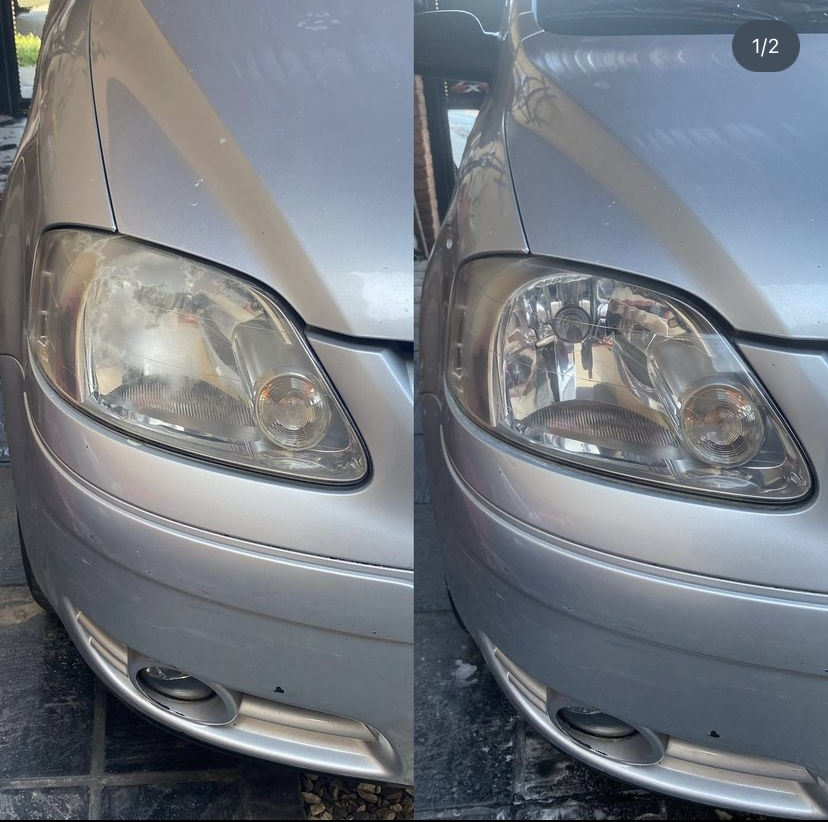

Restauracion de opticas
Restauracion de opticas
Lijado gradual y pulido de opticas eliminando cualquier rastro de degradacion del plastico y asi retomar el brillo y transparencia que una vez tuvo.
Unidad $3000 | El par $5000